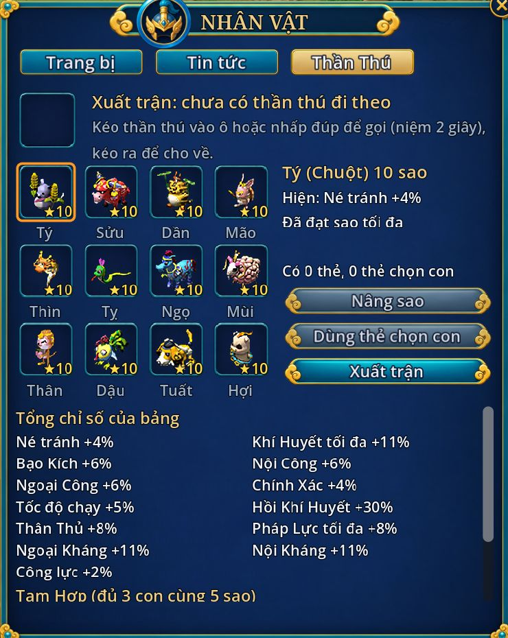

Bảng Thần Thú
- Phím
- Alt+W, tab Thần Thú
- Mấy con
- 12 con giáp, tối đa 10 sao
- Tốn gì
- Thẻ Thần Thú, ngân lượng
- Được gì
- Chỉ số cộng thẳng

- Mở con mới: dùng Thẻ Thần Thú của con đó, chắc chắn được 1 sao.
- Nâng sao: 1 thẻ cùng loại + ngân lượng, đứng gần Bảo Thú Đại Phu (Chu, Sở). Trượt thì mất thẻ, giữ nguyên sao.
- Xuất trận: kéo con vào ô Xuất trận hoặc nhấp đúp (niệm 2 giây).
- Mọi con đã mở đều cộng chỉ số, kể cả con không đi theo.
- Con đi theo được cộng thêm 50 % chỉ số của chính nó, không đánh và không bị đánh.
- Thẻ chọn con dùng cho con nào cũng được.
| Con | Mỗi sao cộng | 10 sao |
|---|---|---|
| Tý (Chuột) | Né tránh 0,4 % | 4 % |
| Sửu (Trâu) | Khí Huyết tối đa 0,8 % và 100 | 8 % và 1.000 |
| Dần (Hổ) | Bạo Kích 0,4 % | 4 % |
| Mão (Thỏ) | Nội Công 0,6 % | 6 % |
| Thìn (Rồng) | Ngoại Công 0,6 % | 6 % |
| Tỵ (Rắn) | Chính Xác 0,4 % | 4 % |
| Ngọ (Ngựa) | Tốc độ chạy 0,5 % | 5 % |
| Mùi (Dê) | Hồi Khí Huyết 3 % | 30 % |
| Thân (Khỉ) | Thân Thủ 0,8 % | 8 % |
| Dậu (Gà) | Pháp Lực tối đa 0,8 % | 8 % |
| Tuất (Chó) | Ngoại Kháng 0,8 % | 8 % |
| Hợi (Heo) | Nội Kháng 0,8 % | 8 % |
Tam Hợp: 3 con cùng nhóm, mỗi con từ 5 sao
- Thân Tý Thìn: Công lực 2 %.
- Tỵ Dậu Sửu: Khí Huyết tối đa 3 %.
- Dần Ngọ Tuất: Bạo Kích 2 %.
- Hợi Mão Mùi: Ngoại Kháng và Nội Kháng 3 %.
Thẻ Thần Thú có ở bảng thẻ Cổ Mộ và Chiến Quốc Bảo Điển. Thẻ chọn con: đổi ở sư phụ (20 điểm sư môn), Quân Công Phủ (1.100 Quân Công), nhiệm vụ cuối cốt truyện Hổ Phù. Thẻ đổi ở sư phụ và Quân Công Phủ là đồ khoá, mỗi tuần đổi tối đa 7 lần (hai chỗ tính chung một bộ đếm).
Giá và tỉ lệ nâng sao
- Lên sao N tốn 1 thẻ cùng loại và 60.000 × N lượng (lên 10 sao: 600.000).
- Lên 2 sao thành công 90 %, mỗi sao sau bớt 10 % (lên 10 sao còn 10 %).